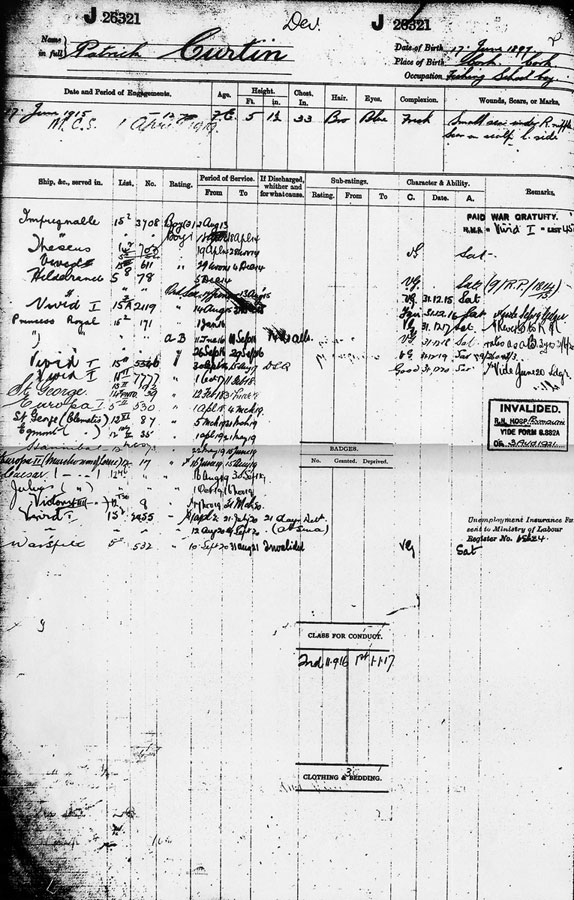

Patrick was born 17th June 1897 in Cork. Ireland. He volunteered for the Royal Navy on 2 Aug 1913, aged 16 signing on for 12 years as a boy seaman 2nd class. His 12 years service commenced on his eighteenth birthday 1915. However, he didn't complete his full 12 years as he was invalided out 31st Aug 1921
During his service, Patrick served in several ships throughout WW1, but his training as a boy seaman was carried out in the second HMS Theseus, which, just prior to the war was used as a training ship. He joined Theseus 19th Apr 1914, and took part in the Fleet Review by King George V at Spithead in July. The ship then commissioned for war and joined the 10th Cruiser Squadron, It must also have been quite an experience for young Patrick when on 15th Oct 1914 Theseus narrowly avoided a torpedo fired from the German submarine U 17.
Patrick was drafted to HMS Vivid the Royal Naval Barracks. Devonport on 29th Nov 1914,


The above information was kindly submitted by Peter Jones the grandson of Patrick Curtin.